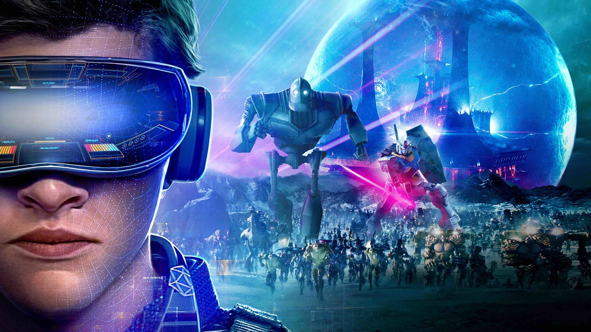

En este blog hablaré acerca de los medios interactivos y si los videojuegos son los mejores.
hablaré acerca de las ventajas que tienen los videojuegos frente a otros medios interactivos
(como la música, películas, libros, etc)
Desarrollo
Desde hace mucho tiempo, la humanidad ha sido impactada por medios interactivos. Ya que, como
sociedad,
estábamos lo suficientemente automatizados para vivir simplemente para sobrevivir. Por lo
que creamos
los medios interactivos.
Personalmente, creo que los videojuegos son el mejor medio de entretenimiento actualmente. Ya
que no solo
se limita a realizar una sola cosa. (simplemente escuchar, como lo es en la música). Los
videojuegos son un
conjunto perfeccionado de los distintos medios que tenemos actualmente. Ya que un videojuego
contiene música,
diálogos de texto y sobre todo, la posibilidad de controlar y vivir experiencias que no se
pueden vivir en la
realidad. Espero que disfruten del blog.
Motivación
Mi Motivación para realizar este blog es mi gran interés por la programación y los
videojuegos.

Portada película "Ready Player One".
Ranking
11/01/2022
Top 10 videojuegos
Se realizará un top de los 10 videojuegos más jugados por conteo de jugadores.
Mini World
Microsoft Solitaire
Among Us
Candy Crush Saga
Pac-Man Google Doodle
Minecraft
QQ Speed/ GKART/ Speed Drifters
Dungeon Fighter Online
CrossFire
PUBG: Battlegounds
PUBG: Battlegounds
Sitios oficiales
11/01/2022
5 sitios oficiales de videojuegos populares
Se realizará un listado con links a páginas de videojuegos populares.
Creo que el video retrata muy bien lo que son los videojuegos y el impacto que ellos tienen
en nuestra sociedad actual. Incluyo también que las bandas sonoras de los videojuegos le dan
un "toque" único y especial a cada título.
Creo que el video está bien enfocado a lo que son los videojuegos y la consecuencia que
tienen en nosotros al momento de jugar (no necesariamente malos).
23/01/2022
Videojuegos y educación
Entre todo en la vida, todas las cosas tienen cosas positivas y negativas. Los videojuegos no
son una excepción. Investigando, pude encontrar un estudio realizado por Félix Etxeberria,
quien Tras analizar más de 260 estudios e investigaciones sobre el tema, llega a la
conclusión de que los videojuegos tienen algunos efectos negativos en lo que respecta a
las actitudes violentas y el sexismo, pero también tienen una influencia positiva en el
uso educativo y terapéutico y en el desarrollo de diversas habilidades de todo tipo.
Lo cual me parece muy interesante. Sobre todo por el tema que estamos abordando en este
blog.1
Los primeros pasos de los actuales videojuegos se detectan en los años 40, cuando los
técnicos americanos desarrollaron el primer simulador de vuelo, destinado al
entrenamiento de pilotos. En 1962 apareció la tercera generación de ordenadores,
reduciendo su tamaño y coste de manera drástica y a partir de ahí el proceso ha sido
continuado.1
Hay que tener en cuenta que la clasificación que hacen las revistas especializadas difiere
en cierto sentido de estas grandes categorías, variando además con bastante frecuencia.
En la actualidad (Hobby Consolas, 1998), los especialistas en el tema distribuyen a los
juegos con arreglo a varios parámetros, como el tipo de consola, nivel de dificultad,
tipo de juego, etc. Según esto contamos con 5 tipos de consolas en el mercado español:
Game Boy, Nintendo 64, PSX Platinun, Sega Return y PlayStation. A estos tipos de
consolas hay que añadirles los juegos que tienen como soporte un ordenador personal.1
Un tema de constante estudio es el de la medición del número de horas que los jugadores le
dedican a los VJ y las posibles repercusiones que para la vida diaria y los estudios
puedan tener dichas horas. Esta cuestión es relativamente fácil de resolver, puesto que
son constantes las encuestas al respecto y la contabilización de las mismas no deja
lugar a dudas de interpretación.1
Breve historia de los videojuegos
A continuación se incluirá alugunas referencias de un estudio realizado por Simone Belli y
Cristian López Raventós en la Universidad Autónima de Barcelona. El siguiente documento
es un breve viaje por una corta pero intensa aventura, la historia de los videojuegos.
Desde sus inicios en la década de los 50 hasta nuestros días los videojuegos han pasado
de ser un pasatiempo para jóvenes estudiantes de ingeniería a convertirse en la
industria del ocio más poderosa.2
Para conocer algo mejor este fenómeno es preciso recorrer el camino inverso para descubrir
la senda que nos ha llevado hasta aquí. Ver qué consolas y juegos han conseguido que los
videojuegos sean hoy lo que son. Cuales son sus implicaciones en la cultura visual
contemporánea y qué prejuicios soportan en nuestra actualidad. Este es un breve relato
sobre una gran historia.2
En este momento los videojuegos son la puerta de entrada de niños y jóvenes en las TIC.
Mediante el videojuego los niños adquieren capacidades y desarrollan habilidades
diversas, las más importantes de las cuáles son la familiarización con las nuevas
tecnologías, su aprecio y su dominio. Por este motivo el videojuego es en estos momentos
un elemento determinante para socializarse en el mundo de las nuevas tecnologías.2
Aunque parezca que Súper Mario sea un producto de la fantasía, existe siempre una clara
distinción entre lo bueno y lo malo, los valores, la muerte y la amistad. Estos valores
están construido a través diferentes imágenes virtuales (estrellitas, corazones, etc.),
es decir productos típicamente simbólicos.2
Efectos Psicosociales de los videojuegos
A continuación se incluirán algunas referencias de una investigación realizada por Ricardo
Tejeiro, Manuel Pelegrina y Jorge Luis Gómez en la revista Internacional de Comunicación
Audiovisual. Desde su aparición en los años 70, los posibles efectos psicosociales de los
videojuegos, positivos o negativos, han sido objeto de una considerable polémica. La
mayoría de los argumentos en uno u otro sentido se han basado más en opiniones
personales y prejuicios que en los datos de investigación3
En este artículo revisamos el estado de la cuestión en relación con estos argumentos,
tanto negativos (adicción, agresividad, aislamiento social, rendimiento escolar,
desplazamiento de otras actividades, conducta delictiva o antisocial, juego patológico,
consumo de sustancias, trastornos médicos) como positivos (entrenamiento y mejora de
habilidades, utilidades terapéuticas, uso como medio didáctico)3
En este tiempo, y con frecuencia a partir de simples impresiones anecdóticas o de
razonamientos más o menos discutibles, se los ha llegado a acusar prácticamente de todo,
desde promover la delincuencia a inducir a la agresión, ser causa de absentismo escolar
y de alienación, o, simplemente, ser malignos por naturaleza.3
El estudio concluye su investigación con las siguientes palabras: Por todo ello,
finalizamos la presente revisión asumiendo las conclusiones que en fechas no muy lejanas
ofrecía el Ministerio de Sanidad y Consumo en una nota de prensa: “Hasta ahora no
existen estudios científicos realizados con el suficiente rigor e independencia que
permitan determinar sin sombra de duda que el uso de estos juegos o juguetes cause o
pueda causar daños inmediatos o previsibles en los niños y jóvenes usuarios, o inducir a
conductas delictivas o reprobables socialmente”.3
 Nivel. 1: Entretenimiento
Nivel. 1: Entretenimiento
 Sitios oficiales
Sitios oficiales
 ¿Qué es ser gamer?
¿Qué es ser gamer?